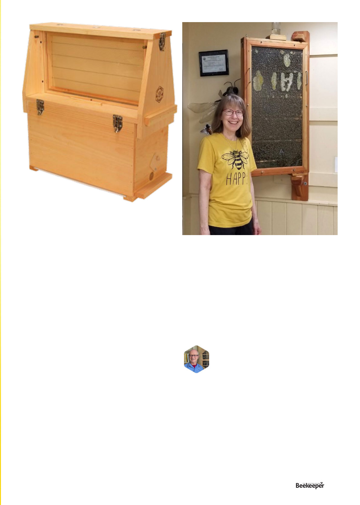

• Someone to check the hive daily, feed it as needed, and
notify the beekeeper when further attention is necessary
• Someone knowledgeable to respond to visitor’s questions,
• A docent to provide ‘tours’ or demos of the observation hive,
• An exhibit designer to construct engaging, entertaining, and
educational displays around the observation hive.
Concluding Remarks
Even though you have been keeping bees for a while, you
will find your observation hive is more engaging than you
thought possible, and you will learn more than you expected,
Maintaining your observation hive will be simple if you select
a hive that is easy to open and close, and small enough to
move without difficulty. You can attract the public with a tem-
porary portable observation hive. A permanent observation
hive in a public space, while a mult-person job, can be a major
attraction.
Note: An earlier version of this article first appeared in the
September 2018 edition of Bee Culture magazine.
Sources of Observation Hives
• Bob’s Beekeeping Supplies (http://www.bobsbeekeeping.
com.au) offers the Ulster observation hive.
• Beequip NZ (https://beequip.nz) offers the SpyHive,
For in-depth information about honey bee behaviors,
try these books
• Chitka, Lars. The Mind of a Bee. 2022.
• Kracht, Matt. OMFG Bees! 2023.
• Seeley, Thomas D. The Lives of Bees. 2019.
• Seeley, Thomas D. Piping Hot Bees and Boisterous Buzz-
Runners. 2024.
• Seeley, Thomas D. The Wisdom of the Hive. 1996.
Frank Linton, Ed.D, is an Easterm Apicultural Society
certified Master Beekeeper. He is the author of The
Observation Hive Handbook: Studying Honey Bees
at Home, and co-author of Hive Tour: The Iisider’s
Guide to Honey Bees. Frank hosts the website https://
thebeepeeker.com, a guide to observation hives.
Though visually impaired, Frank enjoys the sights,
sounds, and smells of his observation hive.
• Figure 6. An Ulster-style observation hive. A queen excluder
below the visible frame ensures the queen is visible.
• Figure 7. An observation hive for the public. These hives
require extra care to keep the colony healthy and visually
appealing.
Vol. 127 | No. 4 |
| 31